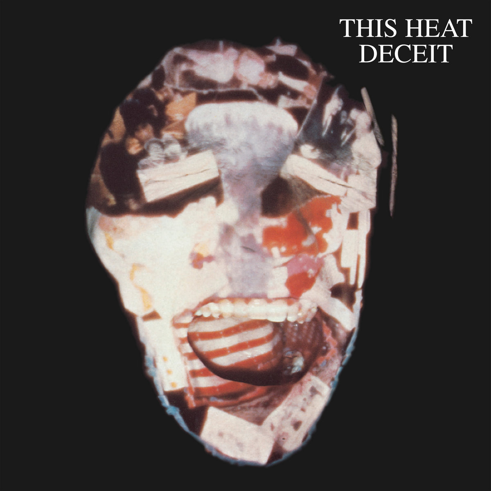
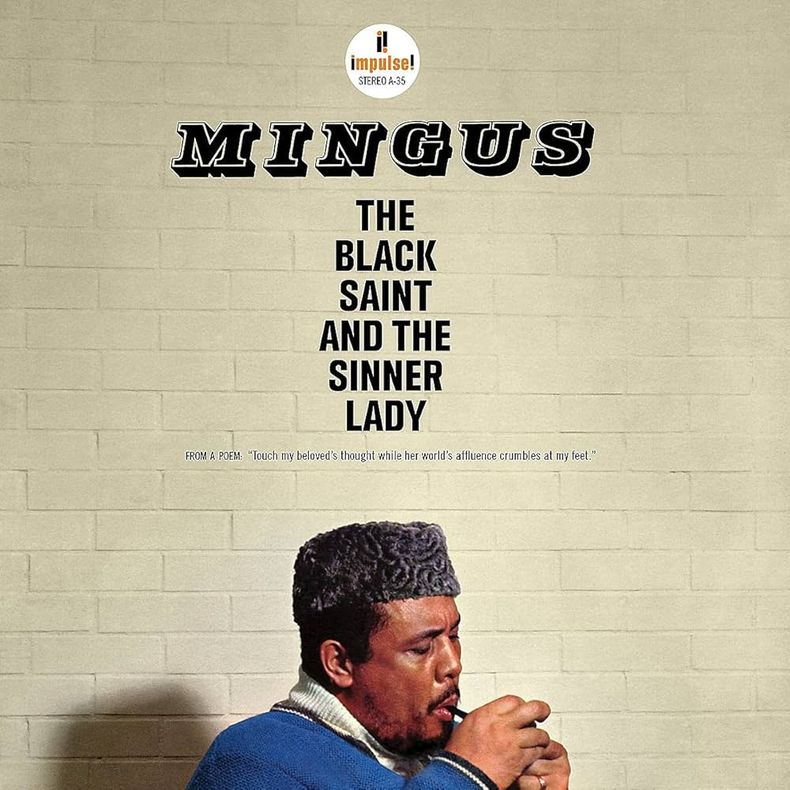

About:
I'm Isaac, a Master's Student in Econometrics and Mathematical Economics at the London School of Economics. My research interests are in AI, monetary policy, and economic analysis of law. In my spare time I like playing music, reading philosophy, and coding.
Art:
When it's more polished, I'll put my own music on this website. For now, here is a record of my taste in art:
Top 5 Movies
- Persona
 (1966) dir. Ingmar Bergman
(1966) dir. Ingmar Bergman
- Dr. Strangelove or: How I Learned to Stop Worrying and Love the Bomb (1964) dir. Stanley Kubrick
- The Graduate (1967) dir. Mike Nichols
- Yi Yi (2000) dir. Edward Yang
- The Godfather
 (1972) dir. Francis Ford Coppola
(1972) dir. Francis Ford Coppola
Top 5 Albums
- Deceit  (1981) This Heat
- In a Silent Way (1969) Miles Davis
- Pet Sounds (1966) The Beach Boys
- The Black Saint and the Sinner Lady  (1963) Charles Mingus
- Soundtracks for the Blind
 (1996) Swans
(1996) Swans
Top 5 Novels
- The Sound and the Fury (1929) William Faulkner
- Ulysses (1922) James Joyce
- Wuthering Heights (1845) Emily Brontë
- The Sirens of Titan (1959) Kurt Vonnegut
- Moby-Dick or, The Whale (1851) Herman Melville
Writing Samples:
-
Brewing change? The effect of Maryland’s 2011 state alcohol tax increase on violent crime and property crime.
Samuel Ferreira Duran, Vishwa Srinivasan, Isaac Stella, Milo Tasman, Minsoo Kang, Elsa Laferrière-Nguyen, Jeanne Boytchev.
Link
-
Authoritarian Excellence, Democratic Hesitance: The Differing Results of the United States and China’s Energy Transitions in the 21st Century.
Isaac Stella
Link